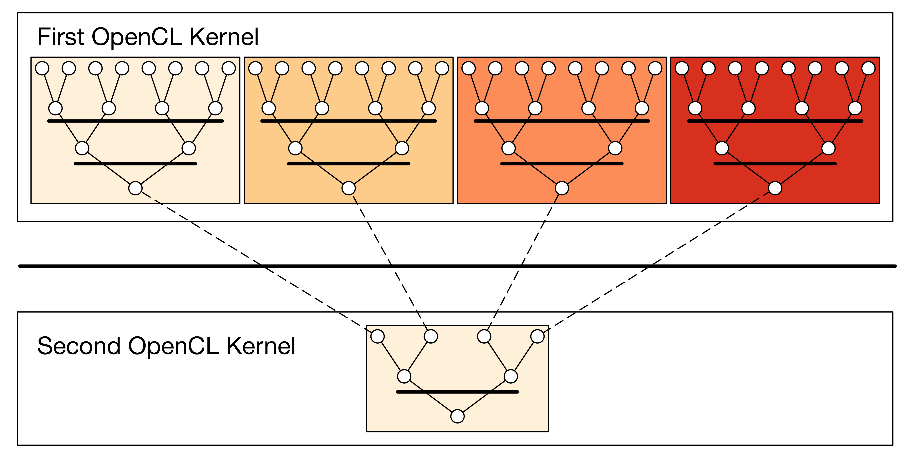
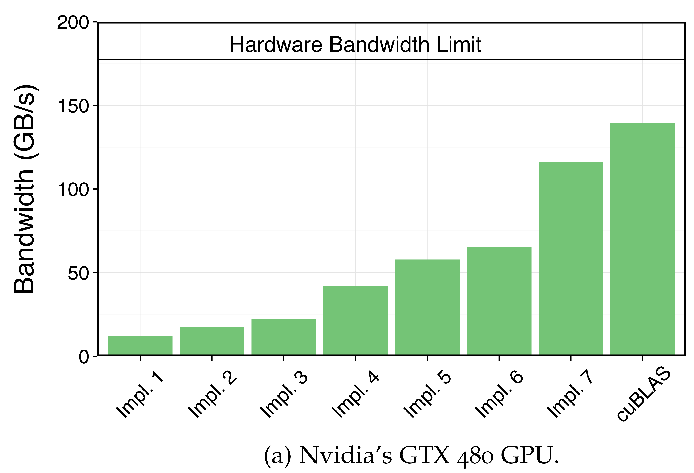
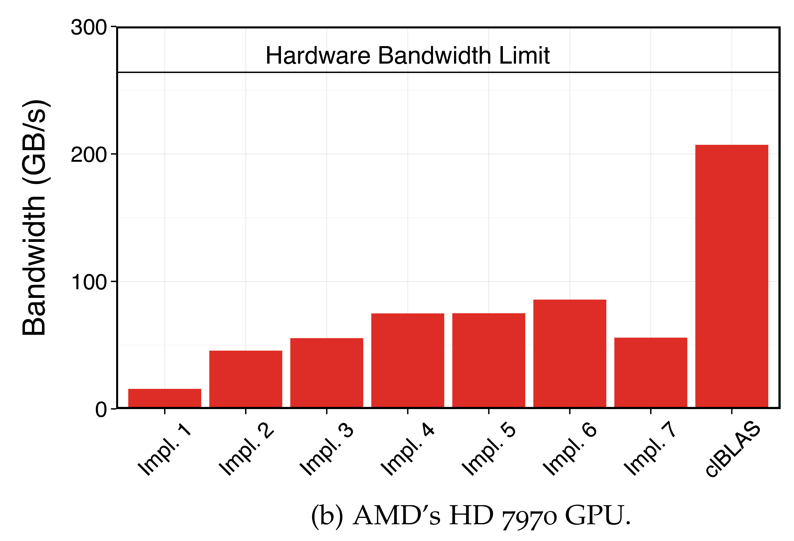
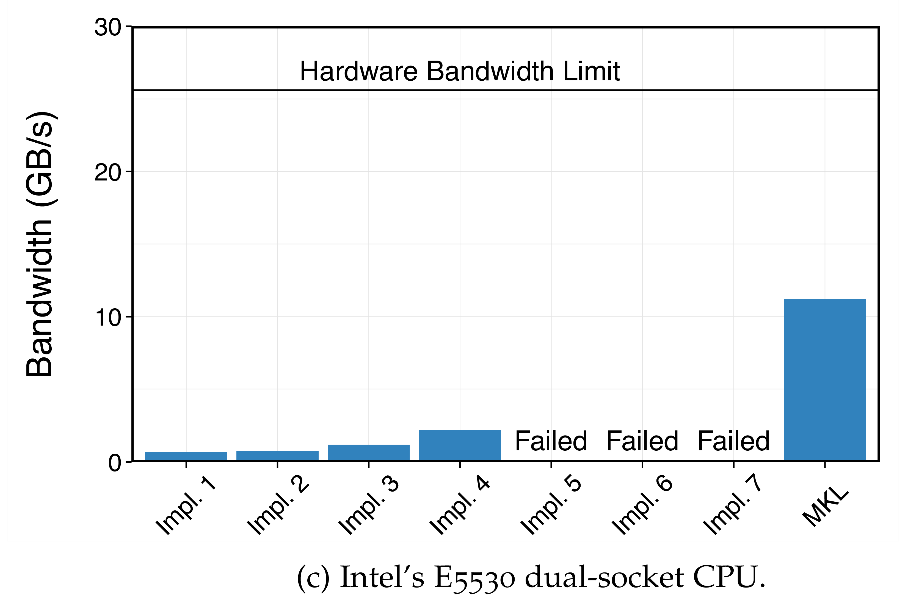
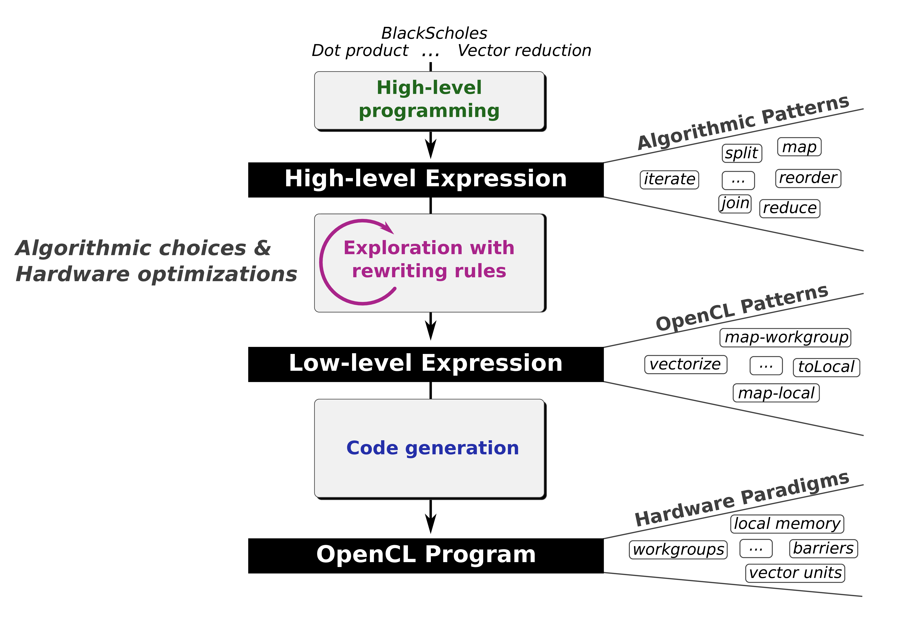

name: title background-image: url(../template/images/Title16x9.jpg) class: title-slide count: false # The .lift[Lift] Project ## Performance Portable Code Generation via Rewrite Rules ### Michel Steuwer .smaller[| [http://michel.steuwer.info](http://michel.steuwer.info/) | [michel.steuwer@glasgow.ac.uk](mailto:michel.steuwer@glasgow.ac.uk)] --- class: split-40 # What is the problem .lift[Lift] tries to tackle? .left-column[ - Parallel processors everywhere - Many different types:<br/> CPUs, GPUs, FPGAs, ... - Parallel programming is hard - Optimising is even harder - **How do we write efficient software for all these devices?** ] <div style="text-align: center;"> <div style="width: 400px; position: absolute; top: 150px; left: 560px"> <img style="vertical-align:middle" src="images/cpu.png" width="80%"/> <strong>CPUs</strong> </div> <div style="width: 500px; position: absolute; top: 220px; left: 640px;"> <img style="vertical-align:middle" src="images/gpu.png" width="80%"/> <strong style="margin-left: -30px;">GPUs</strong> </div> <div style="width: 200px; position: absolute; top: 375px; left: 500px;"> <img style="vertical-align:middle" src="images/phi.png" width="100%"/> <strong>Accelerator</strong> </div> <div style="width: 150px; position: absolute; top: 395px; left: 740px;"> <img style="vertical-align:middle" src="images/fpga.png" width="100%"/> <strong>FPGA</strong> </div> <div style="width: 150px; position: absolute; top: 375px; left: 960px;"> <img style="vertical-align:middle" src="images/tpu.png" width="100%"/> <strong>TPU</strong> </div> <div style="width: 200px; position: absolute; top: 550px; left: 360px;"> <img style="vertical-align:middle" src="images/hpu.png" width="100%"/> <strong>HPU</strong> </div> <div style="width: 200px; position: absolute; top: 560px; left: 600px;"> <img style="vertical-align:middle" src="images/brainwave.png" width="100%"/> <strong>Brainwave</strong> </div> <div style="width: 150px; position: absolute; top: 540px; left: 850px;"> <img style="vertical-align:middle" src="images/neuralEngine.png" width="75%"/> <strong>Neural Engine</strong> </div> </div> --- # Case Study: Parallel Reduction in OpenCL - Summing up all values of an array - Comparison of 7 implementations by Nvidia - Investigating complexity and efficiency of optimisations .box-70[  ] --- # Parallel Reduction in OpenCL .left[.text-white[-]] .box-70[ ``` kernel void reduce(global float* g_idata, global float* g_odata, unsigned int n, local float* l_data) { unsigned int tid = get_local_id(0); unsigned int i = get_global_id(0); l_data[tid] = (i < n) ? g_idata[i] : 0; barrier(CLK_LOCAL_MEM_FENCE); for (unsigned int s=1; s < get_local_size(0); s *= 2) { if ((tid % (2*s)) == 0) { l_data[tid] += l_data[tid + s]; barrier(CLK_LOCAL_MEM_FENCE); } } if (tid == 0) g_odata[get_group_id(0)] = l_data[0]; } ``` ] --- count: false # Parallel Reduction in OpenCL <svg class="full-layover hl"> <rect x="244" y="197" rx="10" ry="10" width="70" height="30"/> <line x1="140" y1="175" x2="244" y2="200"/> <rect x="470" y="265" rx="10" ry="10" width="190" height="30"/> <line x1="420" y1="570" x2="480" y2="292"/> </svg> .left[**Kernel** function exectued in parallel by multiple **work-items**] .box-70[ ``` kernel void reduce(global float* g_idata, global float* g_odata, unsigned int n, local float* l_data) { unsigned int tid = get_local_id(0); unsigned int i = get_global_id(0); l_data[tid] = (i < n) ? g_idata[i] : 0; barrier(CLK_LOCAL_MEM_FENCE); for (unsigned int s=1; s < get_local_size(0); s *= 2) { if ((tid % (2*s)) == 0) { l_data[tid] += l_data[tid + s]; barrier(CLK_LOCAL_MEM_FENCE); } } if (tid == 0) g_odata[get_group_id(0)] = l_data[0]; } ``` ] .center[**Work-items** are identified by a unique **global id**] --- count: false # Parallel Reduction in OpenCL <svg class="full-layover hl"> <rect x="470" y="243" rx="10" ry="10" width="180" height="30"/> <line x1="900" y1="175" x2="647" y2="245"/> <rect x="550" y="347" rx="10" ry="10" width="200" height="30"/> <line x1="900" y1="175" x2="647" y2="348"/> <rect x="499" y="497" rx="10" ry="10" width="174" height="30"/> <line x1="580" y1="570" x2="580" y2="525"/> </svg> .right[**Local id** within work-group] .box-70[ ``` kernel void reduce(global float* g_idata, global float* g_odata, unsigned int n, local float* l_data) { unsigned int tid = get_local_id(0); unsigned int i = get_global_id(0); l_data[tid] = (i < n) ? g_idata[i] : 0; barrier(CLK_LOCAL_MEM_FENCE); for (unsigned int s=1; s < get_local_size(0); s *= 2) { if ((tid % (2*s)) == 0) { l_data[tid] += l_data[tid + s]; barrier(CLK_LOCAL_MEM_FENCE); } } if (tid == 0) g_odata[get_group_id(0)] = l_data[0]; } ``` ] .center[**Work-items** are grouped into **work-groups**] --- count: false # Parallel Reduction in OpenCL <svg class="full-layover hl"> <rect x="445" y="198" rx="10" ry="10" width="80" height="30"/> <line x1="250" y1="175" x2="450" y2="200"/> <rect x="695" y="198" rx="10" ry="10" width="80" height="30"/> <line x1="250" y1="175" x2="700" y2="200"/> <rect x="620" y="220" rx="10" ry="10" width="65" height="30"/> <line x1="680" y1="175" x2="650" y2="220"/> <rect x="265" y="307" rx="10" ry="10" width="320" height="30"/> <line x1="210" y1="570" x2="300" y2="337"/> <rect x="348" y="414" rx="10" ry="10" width="320" height="30"/> <line x1="210" y1="570" x2="370" y2="444"/> </svg> <div style="float: left;">Big, but slow <strong>global</strong> memory</div> <div style="float: right; margin-right: 330px;">Small, but fast <strong>local</strong> memory</div> <div style="clear: both"></div> .box-70[ ``` kernel void reduce(global float* g_idata, global float* g_odata, unsigned int n, local float* l_data) { unsigned int tid = get_local_id(0); unsigned int i = get_global_id(0); l_data[tid] = (i < n) ? g_idata[i] : 0; barrier(CLK_LOCAL_MEM_FENCE); for (unsigned int s=1; s < get_local_size(0); s *= 2) { if ((tid % (2*s)) == 0) { l_data[tid] += l_data[tid + s]; barrier(CLK_LOCAL_MEM_FENCE); } } if (tid == 0) g_odata[get_group_id(0)] = l_data[0]; } ``` ] .left[Memory **barriers** for consistency] --- count: false # Parallel Reduction in OpenCL <svg class="full-layover hl"> <rect x="300" y="365" rx="10" ry="10" width="400" height="100"/> <line x1="300" y1="420" x2="225" y2="175"/> </svg> .left[Potential **deadlock**!] .box-70[ ``` kernel void reduce(global float* g_idata, global float* g_odata, unsigned int n, local float* l_data) { unsigned int tid = get_local_id(0); unsigned int i = get_global_id(0); l_data[tid] = (i < n) ? g_idata[i] : 0; barrier(CLK_LOCAL_MEM_FENCE); for (unsigned int s=1; s < get_local_size(0); s *= 2) { if ((tid % (2*s)) == 0) { l_data[tid] += l_data[tid + s]; barrier(CLK_LOCAL_MEM_FENCE); } } if (tid == 0) g_odata[get_group_id(0)] = l_data[0]; } ``` ] --- count: false # Parallel Reduction in OpenCL <svg class="full-layover hl"> <rect x="300" y="365" rx="10" ry="10" width="400" height="100"/> <line x1="300" y1="420" x2="225" y2="175"/> </svg> .left[Potential **deadlock**!] .box-70[ ``` kernel void reduce(global float* g_idata, global float* g_odata, unsigned int n, local float* l_data) { unsigned int tid = get_local_id(0); unsigned int i = get_global_id(0); l_data[tid] = (i < n) ? g_idata[i] : 0; barrier(CLK_LOCAL_MEM_FENCE); for (unsigned int s=1; s < get_local_size(0); s *= 2) { if ((tid % (2*s)) == 0) { l_data[tid] += l_data[tid + s]; } barrier(CLK_LOCAL_MEM_FENCE); } if (tid == 0) g_odata[get_group_id(0)] = l_data[0]; } ``` ] .center[**Functionally correct implementations in OpenCL are hard!**] --- # 1. Version: .smaller[Unoptimised Reduction Implementation] .box-70[ ``` kernel void reduce(global float* g_idata, global float* g_odata, unsigned int n, local float* l_data) { unsigned int tid = get_local_id(0); unsigned int i = get_global_id(0); l_data[tid] = (i < n) ? g_idata[i] : 0; barrier(CLK_LOCAL_MEM_FENCE); for (unsigned int s=1; s < get_local_size(0); s *= 2) { if ((tid % (2*s)) == 0) { l_data[tid] += l_data[tid + s]; } barrier(CLK_LOCAL_MEM_FENCE); } if (tid == 0) g_odata[get_group_id(0)] = l_data[0]; } ``` ] --- # 2. Version: .smaller[Avoid Divergent Branching] .box-70[ ``` kernel void reduce(global float* g_idata, global float* g_odata, unsigned int n, local float* l_data) { unsigned int tid = get_local_id(0); unsigned int i = get_global_id(0); l_data[tid] = (i < n) ? g_idata[i] : 0; barrier(CLK_LOCAL_MEM_FENCE); for (unsigned int s=1; s < get_local_size(0); s *= 2) { `int index = 2 * s * tid;` if (`index < get_local_size(0)`) { l_data[`index`] += l_data[`index` + s]; } barrier(CLK_LOCAL_MEM_FENCE); } if (tid == 0) g_odata[get_group_id(0)] = l_data[0]; } ``` ] --- # 3. Version: .smaller[Avoid Interleaved Addressing] .box-70[ ``` kernel void reduce(global float* g_idata, global float* g_odata, unsigned int n, local float* l_data) { unsigned int tid = get_local_id(0); unsigned int i = get_global_id(0); l_data[tid] = (i < n) ? g_idata[i] : 0; barrier(CLK_LOCAL_MEM_FENCE); for (`unsigned int s=get_local_size(0)/2; s > 0; s >>= 1`) { if (`tid < s`) { l_data[`tid`] += l_data[`tid`+ s]; } barrier(CLK_LOCAL_MEM_FENCE); } if (tid == 0) g_odata[get_group_id(0)] = l_data[0]; } ``` ] --- # 4. Version: .smaller[Increase Comp. Intensity per Work-Item] .box-70[ ``` kernel void reduce(global float* g_idata, global float* g_odata, unsigned int n, local float* l_data) { unsigned int tid = get_local_id(0); `unsigned int i = get_group_id(0) * (get_local_size(0)*2)` `+ get_local_id(0);` l_data[tid] = (i < n) ? g_idata[i] : 0; // perform first addition during loading `if (i + get_local_size(0) < n)` `l_data[tid] += g_idata[i + get_local_size(0)];` barrier(CLK_LOCAL_MEM_FENCE); for (unsigned int s=get_local_size(0)/2; s > 0; s >>= 1) { if (tid < s) { l_data[tid] += l_data[tid+ s]; } barrier(CLK_LOCAL_MEM_FENCE); } if (tid == 0) g_odata[get_group_id(0)] = l_data[0]; } ``` ] --- # 5. Version: .smaller[Avoid Synchronisation inside a Warp] .box-70[ ``` kernel void reduce(global float* g_idata, global float* g_odata, unsigned int n, local `volatile` float* l_data){ unsigned int tid = get_local_id(0); unsigned int i = get_group_id(0) * (get_local_size(0)*2) + get_local_id(0); l_data[tid] = (i < n) ? g_idata[i] : 0; if (i + get_local_size(0) < n) l_data[tid] += g_idata[i + get_local_size(0)]; barrier(CLK_LOCAL_MEM_FENCE); `#pragma unroll 1` for (unsigned int s=get_local_size(0)/2; s > `32`; s >>= 1) { if (tid < s) { l_data[tid] += l_data[tid+ s]; } barrier(CLK_LOCAL_MEM_FENCE); } // this is not portable OpenCL code! `if (tid < 32) {` ` if (WG_SIZE >= 64) { l_data[tid] += l_data[tid+32]; }` ` if (WG_SIZE >= 32) { l_data[tid] += l_data[tid+16]; }` ` if (WG_SIZE >= 16) { l_data[tid] += l_data[tid+ 8]; }` ` if (WG_SIZE >= 8) { l_data[tid] += l_data[tid+ 4]; }` ` if (WG_SIZE >= 4) { l_data[tid] += l_data[tid+ 2]; }` ` if (WG_SIZE >= 2) { l_data[tid] += l_data[tid+ 1]; } }` if (tid == 0) g_odata[get_group_id(0)] = l_data[0]; } ``` ] --- # 6. Version: .smaller[Complete Loop Unrolling] .box-70[ ``` kernel void reduce(global float* g_idata, global float* g_odata, unsigned int n, local volatile float* l_data){ unsigned int tid = get_local_id(0); unsigned int i = get_group_id(0) * (get_local_size(0)*2) + get_local_id(0); l_data[tid] = (i < n) ? g_idata[i] : 0; if (i + get_local_size(0) < n) l_data[tid] += g_idata[i + get_local_size(0)]; barrier(CLK_LOCAL_MEM_FENCE); `if (WG_SIZE >= 256) {` ` if (tid < 128) { l_data[tid] += l_data[tid+128]; }` ` barrier(CLK_LOCAL_MEM_FENCE); }` `if (WG_SIZE >= 128) {` ` if (tid < 64) { l_data[tid] += l_data[tid+ 64]; }` ` barrier(CLK_LOCAL_MEM_FENCE); }` if (tid < 32) { if (WG_SIZE >= 64) { l_data[tid] += l_data[tid+32]; } if (WG_SIZE >= 32) { l_data[tid] += l_data[tid+16]; } if (WG_SIZE >= 16) { l_data[tid] += l_data[tid+ 8]; } if (WG_SIZE >= 8) { l_data[tid] += l_data[tid+ 4]; } if (WG_SIZE >= 4) { l_data[tid] += l_data[tid+ 2]; } if (WG_SIZE >= 2) { l_data[tid] += l_data[tid+ 1]; } } if (tid == 0) g_odata[get_group_id(0)] = l_data[0]; } ``` ] --- # 7. Version: .smaller[Fully Optimised Implementation] .box-70[ ``` kernel void reduce(global float* g_idata, global float* g_odata, unsigned int n, local volatile float* l_data){ unsigned int tid = get_local_id(0); unsigned int i = get_group_id(0) * (get_local_size(0)*2) + get_local_id(0); `unsigned int gridSize = WG_SIZE * get_num_groups(0);` `l_data[tid] = 0;` `while (i < n) { l_data[tid] += g_idata[i];` ` if (i + WG_SIZE < n)` ` l_data[tid] += g_idata[i+WG_SIZE];` ` i += gridSize; }` barrier(CLK_LOCAL_MEM_FENCE); if (WG_SIZE >= 256) { if (tid < 128) { l_data[tid] += l_data[tid+128]; } barrier(CLK_LOCAL_MEM_FENCE); } if (WG_SIZE >= 128) { if (tid < 64) { l_data[tid] += l_data[tid+ 64]; } barrier(CLK_LOCAL_MEM_FENCE); } if (tid < 32) { if (WG_SIZE >= 64) { l_data[tid] += l_data[tid+32]; } if (WG_SIZE >= 32) { l_data[tid] += l_data[tid+16]; } if (WG_SIZE >= 16) { l_data[tid] += l_data[tid+ 8]; } if (WG_SIZE >= 8) { l_data[tid] += l_data[tid+ 4]; } if (WG_SIZE >= 4) { l_data[tid] += l_data[tid+ 2]; } if (WG_SIZE >= 2) { l_data[tid] += l_data[tid+ 1]; } } if (tid == 0) g_odata[get_group_id(0)] = l_data[0]; } ``` ] --- class: split-50 # Reduction Case Study Conclusions .left-column[ - Programming and optimising OpenCL is complex - Understanding of target hardware required - Program changes are not obvious - Why are we doing this? Is it woth it? ... ] .right-column[ .box-90[.small[ ``` kernel void reduce(global float* g_idata, global float* g_odata, unsigned int n, local float* l_data) { unsigned int tid = get_local_id(0); unsigned int i = get_global_id(0); l_data[tid] = (i < n) ? g_idata[i] : 0; barrier(CLK_LOCAL_MEM_FENCE); for (unsigned int s=1; s < get_local_size(0); s *= 2) { if ((tid % (2*s)) == 0) l_data[tid] += l_data[tid + s]; barrier(CLK_LOCAL_MEM_FENCE); } if (tid == 0) g_odata[get_group_id(0)] = l_data[0]; } ``` ]] .smaller[.center[↑ Unoptimised ↑ vs. ↓ Fully Optimised ↓]] .box-90[.small[ ``` kernel void reduce(global float* g_idata, global float* g_odata, unsigned int n, local volatile float* l_data) { unsigned int tid = get_local_id(0); unsigned int i = get_group_id(0) * (get_local_size(0)*2) + get_local_id(0); unsigned int gridSize = WG_SIZE * get_num_groups(0); l_data[tid] = 0; while (i < n) { l_data[tid] += g_idata[i]; if (i + WG_SIZE < n) l_data[tid] += g_idata[i+WG_SIZE]; i += gridSize; } barrier(CLK_LOCAL_MEM_FENCE); if (WG_SIZE >= 256) { if (tid < 128) { l_data[tid] += l_data[tid+128]; } barrier(CLK_LOCAL_MEM_FENCE); } if (WG_SIZE >= 128) { if (tid < 64) { l_data[tid] += l_data[tid+ 64]; } barrier(CLK_LOCAL_MEM_FENCE); } if (tid < 32) { if (WG_SIZE >= 64) { l_data[tid] += l_data[tid+32]; } if (WG_SIZE >= 32) { l_data[tid] += l_data[tid+16]; } if (WG_SIZE >= 16) { l_data[tid] += l_data[tid+ 8]; } if (WG_SIZE >= 8) { l_data[tid] += l_data[tid+ 4]; } if (WG_SIZE >= 4) { l_data[tid] += l_data[tid+ 2]; } if (WG_SIZE >= 2) { l_data[tid] += l_data[tid+ 1]; } } if (tid == 0) g_odata[get_group_id(0)] = l_data[0]; } ``` ]] ] --- # Performance Results Nvidia .box-50[  ] - ... Yes! Optimising improves performance by a factor of **10**! - Optimising is important, but ... --- class: split-50 # Performance Results AMD and Intel .left-column[ .box-80[  ] ] .right-column[ .box-80[  ] ] .clear-columns[] - ... unfortunatley, optimisations in OpenCL are not portable! - Costly optimisation process required for every new device. - **Challenge**: how to achieve *performance portability*? --- <h1><span style="font-size: 0.7em;">.lift[Lift]: Performance Portable Code Generation via Rewrite Rules</span></h1> <svg class="full-layover dark-hl"> <line x1="250" y1="175" x2="250" y2="290"/> <text x="100" y="225"><a xlink:href="http://www.lift-project.org/publications/2015/steuwer15generating.pdf"> [ICFP 2015] </a></text> <line x1="290" y1="260" x2="290" y2="410"/> <text x="130" y="325"><a xlink:href="http://www.lift-project.org/publications/2016/remmelg16perfport.pdf"> [GPGPU 2016] </a></text> <text x="130" y="355"><a xlink:href="http://www.lift-project.org/publications/2016/steuwer16beyondAutoTuning.pdf"> [CASES 2016] </a></text> <line x1="330" y1="380" x2="330" y2="550"/> <text x="190" y="475"><a xlink:href="http://www.lift-project.org/publications/2017/steuwer17LiftIR.pdf"> [CGO 2017] </a></text> </svg> .box-60[  ] .center[**Ambition**: automatic generation of *performance portable* code] --- # Walkthrough --- # 1. Algorithmic Primitives .smaller[(a.k.a. algorithmic skeletons)] - `\( map~f~[x_1, \ldots, x_n] = [f~x_1, \ldots, f~x_n] \)` - `\( zip~[x_1, \ldots, x_n]~[y_1, \ldots, y_n] = [(x_1, y_1), \ldots, (x_n, y_n)] \)` - `\( reduce~(+)~0~[x_1, \ldots, x_n] = 0 + x_1 + \cdots + x_n \)` - `\( split~n~[x_1, \ldots, x_m] = [ [x_1, \ldots, x_n], \ldots, [x_{m-n}, \ldots, x_m]] \)` - `\( join~[ [x_1, \ldots, x_n], \ldots, [x_{m-n}, \ldots, x_m]] = [x_1, \ldots, x_m] \)` - `\( iterate~f~n~xs = iterate~f~(n-1)~(f~xs) \)` <br/> `\( iterate~f~0~xs = xs \)` - `\( reorder~\sigma~[x_1, \ldots, x_n] = [x_{\sigma(1)}, \ldots, x_{\sigma(n)}] \)` --- # 1. High-Level Programs ```lift def scal a xs = map (λ x . x * a) xs def asum xs = reduce (+) 0 (map abs xs) def dotProduct xs ys = reduce (+) 0 (map (*) (zip xs ys)) def gemv mat xs ys α β = map (+) zip( map (λ row . scal α (dotProduct row xs)) mat, scal β ys ) def mm A B = map (λ rowA . map (λ colB . dotProduct rowA colB ) B ) A ``` --- name: closing background-image: url(../template/images/Closing16x9.jpg) class: title-slide, text-white count: false # The .lift[Lift] Project ## Performance Portable Code Generation via Rewrite Rules ### Michel Steuwer .smaller[| [http://michel.steuwer.info](http://michel.steuwer.info/) | [michel.steuwer@glasgow.ac.uk](mailto:michel.steuwer@glasgow.ac.uk)] .center-bottom[.big[[http://www.lift-project.org/](http://www.lift-project.org/)]]